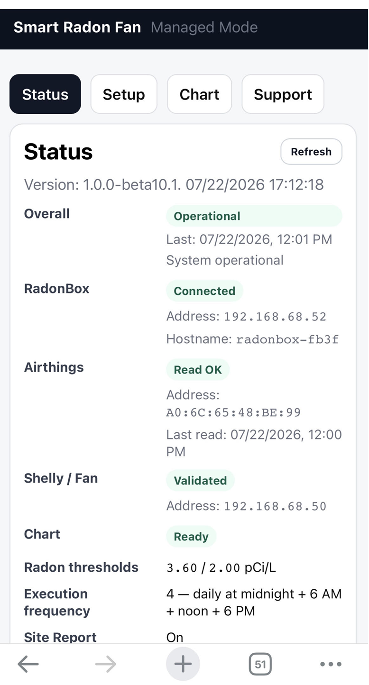
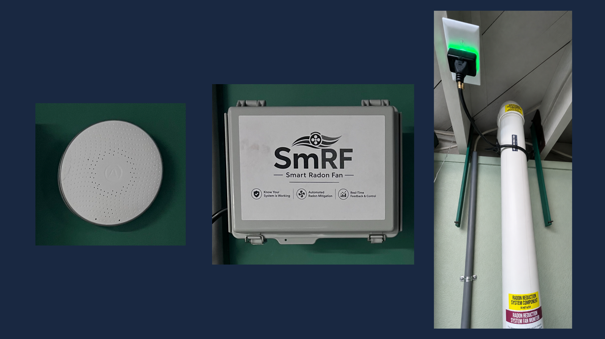

Residential Radon Solutions, LLC
Automated variable-speed radon mitigation
Field results: proving the feedback-and-control concept
SmRF began with automated ON/OFF operation of conventional fixed-speed radon fans in occupied homes. That prototype work was the stepping stone to variable-speed control and provided real operating data for the CRM, local controller, fan-control logic, reporting, and diagnostics.
The field evidence also made the next step clear: variable-speed fans allow the same feedback architecture to control toward a specified radon level rather than choose only between zero and full output.
- Measured response: radon changed in response to commanded fan states.
- Platform validation: control, reporting, diagnostics, and Viewer operated together.
- Engineering conclusion: target-based variable fan speed provides finer mitigation control.
What the ON/OFF field work established
The historical installations remain part of the SmRF story because they provided the evidence and operating experience behind the variable-speed product direction.
Continuous measurement
CRM data can serve as the feedback signal for mitigation control.
Automated decisions
SmRF can act on measured radon without requiring manual fan operation.
Radon responsiveness
Field data showed meaningful response to changes in fan state.
Platform direction
The field prototype established the sensing-and-control foundation that now supports both VS-WiFi and VS-BLE.
Early SmRF fixed-speed managed interface
Before the shift to variable-speed fans, SmRF fielded managed fixed-speed installations using automated ON/OFF control. That work validated the broader control platform and helped generate the fan-to-radon response data shown above.

Representative managed status page from the fixed-speed phase of SmRF development.
Representative early field deployment
This early fixed-speed SmRF installation shows the core field elements that informed the product evolution: an Airthings CRM, the SmRF controller, and the installed mitigation stack. Together, these deployments established that measured radon could drive automated mitigation decisions in real homes.
Those field lessons directly led to the current variable-speed direction, where the same sensing-and-control concept is paired with a compatible EC fan and target-based control algorithm.

Early field hardware example from the fixed-speed phase of SmRF development.
Where the product is going
SmRF now focuses on compatible variable-speed EC radon fans, a hardwired 0–10 V control signal, and algorithms that regulate toward a selected radon target. The same local control platform can be paired with WiFi + Viewer or BLE smartphone connectivity.
New mitigation installations
Install SmRF and a compatible variable-speed fan as an integrated control-and-verification system from the start.
Fan replacement / upgrade
Replace an existing fixed-speed fan with a compatible variable-speed fan and add an 18/2 control pair between SmRF and the fan.
Production direction
The production direction carries forward the locally autonomous sensing-and-control platform proven in the field while replacing fan-side smart switching with direct variable-speed control.